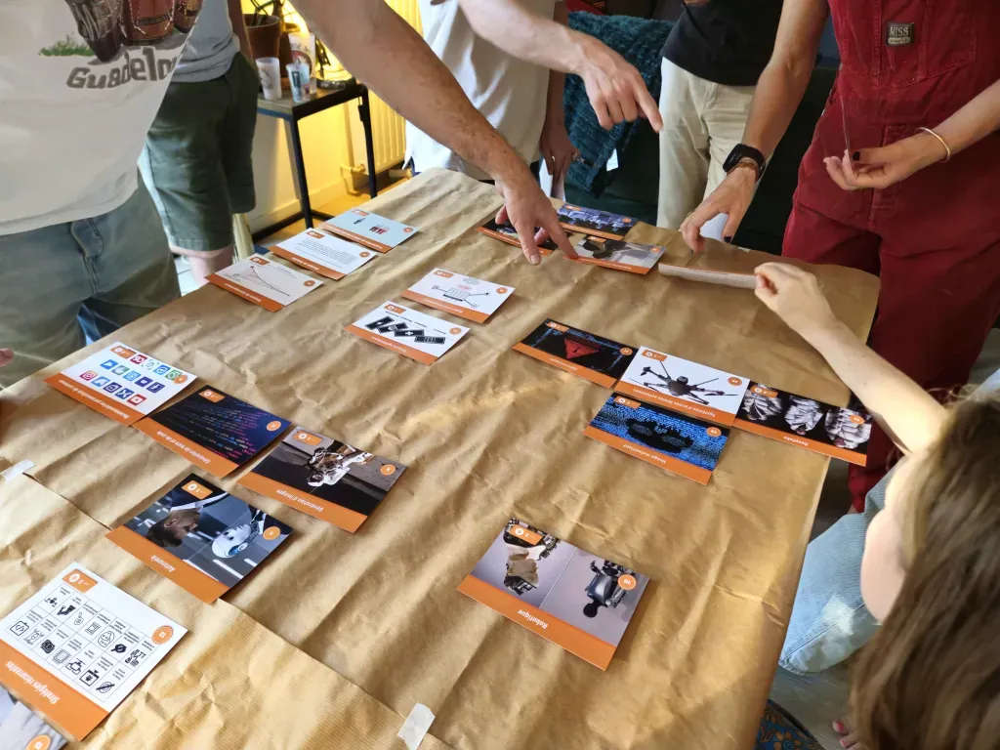
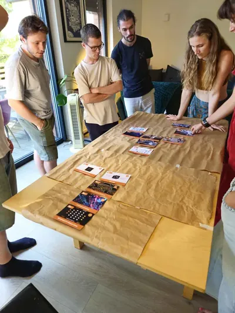
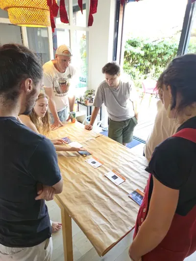
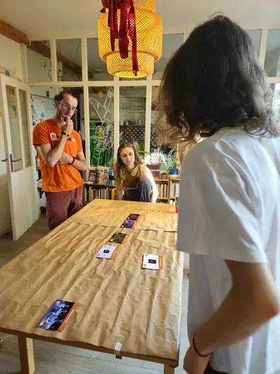
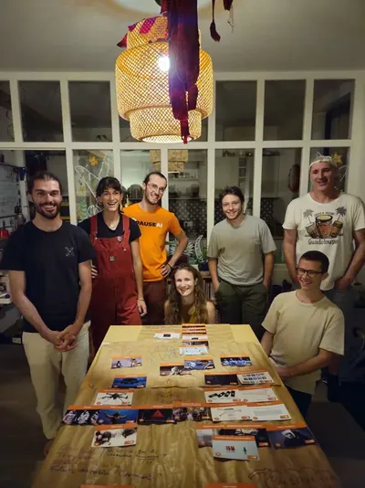

Atelier collaboratif · 2 heures 30
La Fresque des risques de l'IA
La Fresque des risques de l'IA est un atelier collaboratif de 2 heures 30, avec un animateur et deux à huit participants. Les participants discutent des cartes et les relient pour construire une vision d'ensemble de l'intelligence artificielle, de ses capacités à ses risques, jusqu'aux solutions possibles.
Participer à une fresque ne demande aucun prérequis technique. Les participants sont guidés par le contenu des cartes et peuvent apporter leur regard sur toutes les problématiques. Les discussions sont, bien sûr, encouragées.
Les ateliers ont lieu en ligne comme en présentiel. Parcourez les ateliers programmés ici ou dans l'onglet Participer et inscrivez-vous à celui qui vous convient.
Vous pouvez aussi animer le vôtre. Pour vous y aider, nous mettons à disposition un guide d'animation et un outil pour conduire l'atelier à distance. Proposez une date et votre atelier sera ajouté au calendrier.
Impression format A6, recto-verso, sans reliure, bords de coupe de 3 mm de chaque côté. De préférence en couleur et papier satiné 160g. Sous licence libre CC BY-SA 4.0.
Entièrement gratuit et open source. Reprenez librement les cartes et le code (sur GitHub), sans compte ni publicité.
Prochains ateliers
En atelier





Ce qu'en disent les participant·es
Un aperçu des cartes
Chaque carte porte une illustration au recto et une explication courte au verso. Cliquez une carte pour la retourner.
39 cartes au total, dont la carte d'introduction.